Start with the work
We model the decisions, hand-offs and evidence people actually need—not a generic process imposed from outside.
Eagra Labs creates operational software for teams working across complex projects, regulated environments and real-world delivery.
Important work rarely fails because teams lack another dashboard. It fails when context fragments, ownership blurs and evidence arrives too late.
Eagra Labs brings field experience, systems thinking and product design together. We focus on the difficult space between a plan being agreed and the work being demonstrably complete.
That means designing for the people doing the work, the leaders coordinating it and the organisations that must prove how decisions were made.
Meet Eagra Labs →A connected execution system for planning, controlled documents, delivery, safety, quality and the people responsible for moving it forward.

One execution threadWe model the decisions, hand-offs and evidence people actually need—not a generic process imposed from outside.
Organisations, sites and industries differ. Configuration should absorb that difference without weakening control.
People should be able to move from a system to its work, documents, decisions and proof without reconstructing the story.